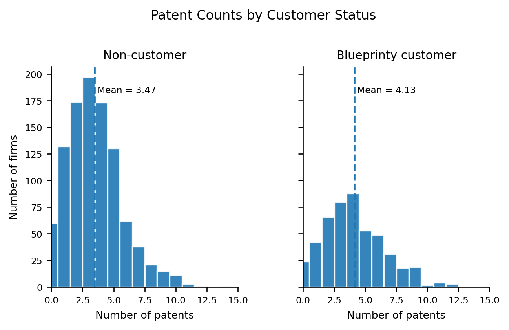
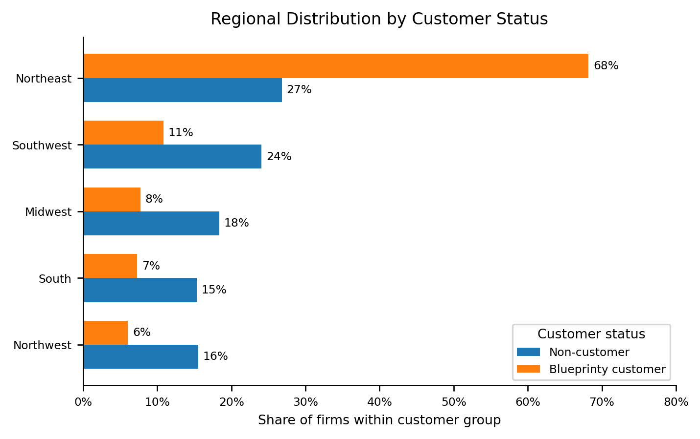
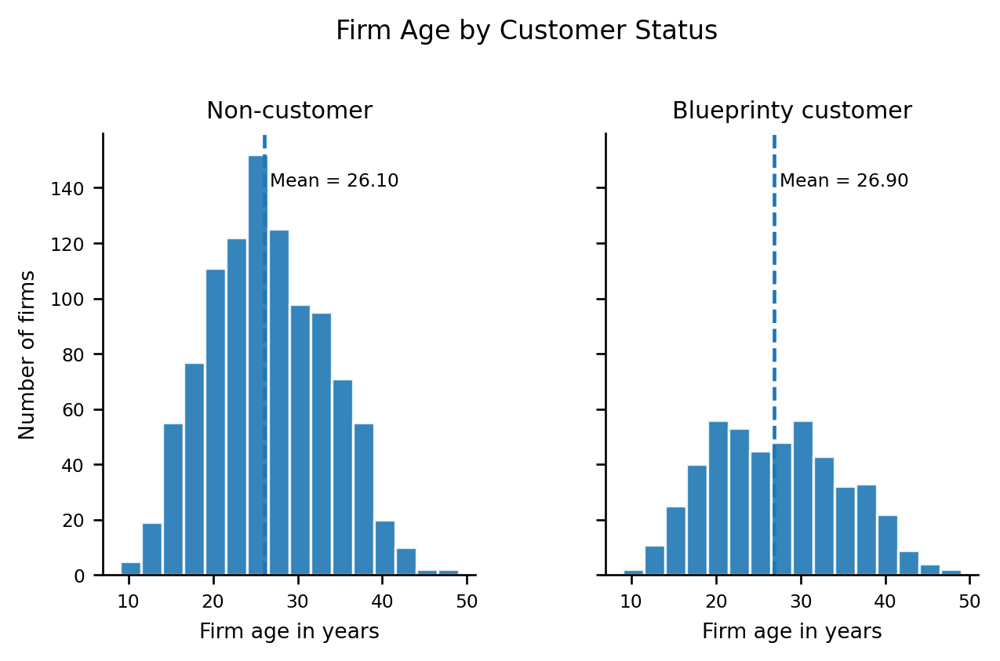
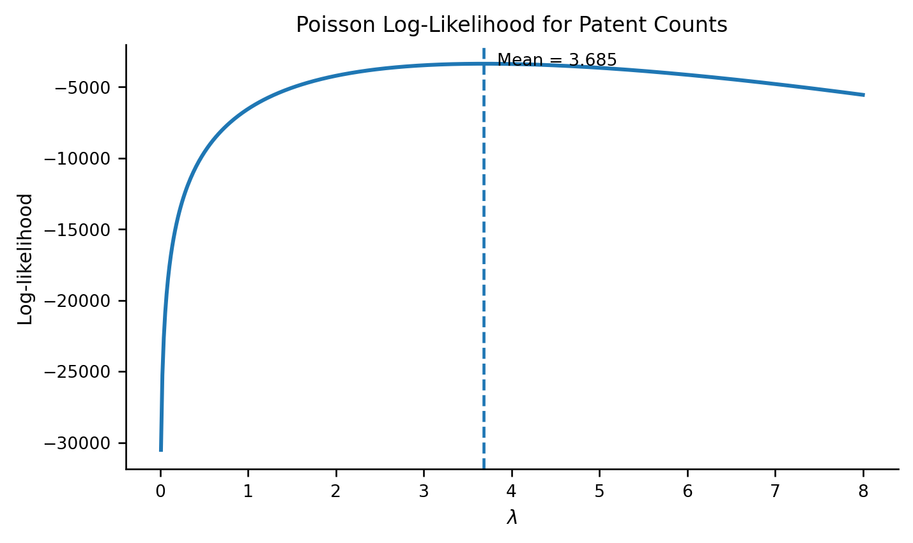
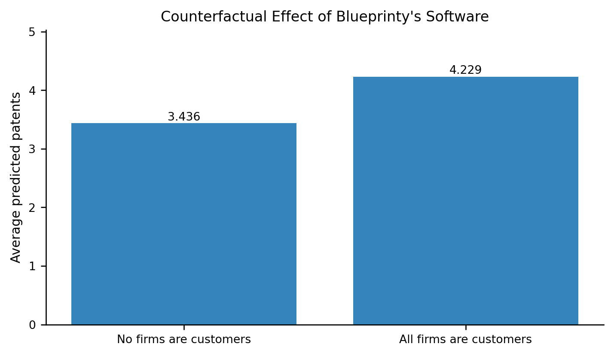

| Customer status | Firms | Mean patents | Median patents | Mean firm age |
|---|---|---|---|---|
| Non-customer | 1019 | 3.47 | 3.00 | 26.10 |
| Blueprinty customer | 481 | 4.13 | 4.00 | 26.90 |
Poisson Regression and Maximum Likelihood Estimation
A Case Study of Blueprinty’s Software and Patent Awards
Author
Lawrence Lin
Published
May 17, 2026
Introduction
Blueprinty is a small software company that builds tools for engineering firms preparing blueprint materials for patent applications. Its marketing team wants to make a strong claim: firms that use Blueprinty’s software are more successful at getting patents approved.
Ideally, we would evaluate this claim with before-and-after data. For example, we would want to observe each firm’s patent success rate before adopting Blueprinty and again after adopting it. That kind of data would make it easier to isolate whether the software itself changed the firm’s patent outcomes. Unfortunately, Blueprinty does not have that dataset.
Instead, Blueprinty has collected cross-sectional data on 1,500 mature engineering firms. For each firm, the dataset records the number of patents awarded over the past five years, the firm’s region, the firm’s age, and whether the firm is a Blueprinty customer.
This makes the analysis interesting but also challenging. If Blueprinty customers have more patents on average, that does not automatically mean the software caused the difference. Customers are not randomly selected. They may be older, located in regions with stronger engineering ecosystems, or different in other ways that also affect patent output. The goal of this post is to use Poisson regression and maximum likelihood estimation to estimate the relationship between Blueprinty usage and patent counts while accounting for observable differences across firms.
Exploring the Data
Before estimating the model, I first inspect the data to understand how patent outcomes differ between Blueprinty customers and non-customers. The dataset contains 1,500 mature engineering firms and records each firm’s number of patents awarded over the last five years, region, age, and whether the firm is a Blueprinty customer.
Blueprinty customers receive more patents on average than non-customers. Non-customers receive about 3.47 patents over the five-year period, while Blueprinty customers receive about 4.13 patents. This raw difference is consistent with Blueprinty’s marketing claim, but it is only descriptive. It does not yet prove that the software itself caused the difference.

The two histograms have similar shapes, with most firms receiving a relatively small number of patents. However, the customer distribution is shifted slightly to the right. This means Blueprinty customers are somewhat more likely to have higher patent counts, which explains why their average number of patents is higher.
However, customer status is not randomly assigned. Firms that choose to use Blueprinty may differ from non-customers in ways that also affect patent output. Two especially important firm characteristics are region and age.

The regional composition differs substantially between customers and non-customers. Blueprinty customers are much more concentrated in the Northeast, while non-customers are more evenly distributed across regions. This matters because region could be related to patent activity. For example, some regions may have stronger engineering labor markets, more patent attorneys, better university networks, or more innovative firms. If firms in one region tend to receive more patents anyway, then part of the raw customer advantage could reflect regional differences rather than the effect of Blueprinty’s software.

The age distributions are fairly similar, but Blueprinty customers are slightly older on average. Non-customers have an average age of about 26.10 years, while Blueprinty customers have an average age of about 26.90 years. This difference is not huge, but age may still matter because older firms could have more experience, larger engineering teams, and more developed patent pipelines.
Overall, the exploratory analysis suggests that Blueprinty customers have higher patent counts, but they also differ from non-customers in region and, to a smaller extent, firm age. The regression model that follows should therefore control for these characteristics before interpreting the relationship between Blueprinty usage and patent outcomes.
A Simple Poisson Model via Maximum Likelihood
Patent awards are count data. A firm can receive 0, 1, 2, or more patents over a five-year period, but it cannot receive a negative number of patents or a fractional number of patents. Because of this, a normal distribution is not the most natural choice for modeling the outcome. A Poisson distribution is a better starting point because it is designed for non-negative integer outcomes.
To begin, I use a very simple Poisson model where every firm has the same expected patent count, \(\lambda\):
\[ Y_i \sim \text{Poisson}(\lambda) \]
For a single firm, the probability of observing patent count \(Y_i\) is:
\[ f(Y_i|\lambda) = \frac{e^{-\lambda}\lambda^{Y_i}}{Y_i!} \]
Assuming the observations are independent and identically distributed, the joint likelihood for all \(n\) firms is the product of the individual probabilities:
\[ L(\lambda|Y) = \prod_{i=1}^{n} \frac{e^{-\lambda}\lambda^{Y_i}}{Y_i!} \]
This can be simplified as:
\[ L(\lambda|Y) = \frac{ e^{-n\lambda} \lambda^{\sum_{i=1}^{n}Y_i} }{ \prod_{i=1}^{n}Y_i! } \]
Taking logs gives the log-likelihood:
\[ \ell(\lambda|Y) = -n\lambda + \left(\sum_{i=1}^{n}Y_i\right)\log(\lambda) - \sum_{i=1}^{n}\log(Y_i!) \]
The last term, \(\sum_{i=1}^{n}\log(Y_i!)\), does not depend on \(\lambda\). It changes the height of the log-likelihood curve, but it does not change the value of \(\lambda\) that maximizes the function.
The log-likelihood function evaluates how well each possible value of \(\lambda\) fits the observed patent counts. I use gammaln(Y + 1) rather than directly computing \(\log(Y_i!)\) because it is more numerically stable.
Next, I evaluate the log-likelihood over a grid of possible \(\lambda\) values and plot the result.

The log-likelihood curve reaches its maximum near \(\lambda = 3.685\). Visually, the maximum likelihood estimate is the value of \(\lambda\) where the curve is highest. In this simple model, that value is the average number of patents in the sample.
We can also show this result analytically. Starting from the log-likelihood,
\[ \ell(\lambda|Y) = -n\lambda + \left(\sum_{i=1}^{n}Y_i\right)\log(\lambda) - \sum_{i=1}^{n}\log(Y_i!) \]
take the first derivative with respect to \(\lambda\):
\[ \frac{\partial \ell}{\partial \lambda} = -n + \frac{\sum_{i=1}^{n}Y_i}{\lambda} \]
Set the derivative equal to zero:
\[ -n + \frac{\sum_{i=1}^{n}Y_i}{\lambda} = 0 \]
Solving for \(\lambda\) gives:
\[ \hat{\lambda}_{MLE} = \frac{1}{n}\sum_{i=1}^{n}Y_i = \bar{Y} \]
This result makes intuitive sense. The mean of a Poisson distribution is \(\lambda\), so the best-fitting single-rate Poisson model chooses \(\lambda\) to match the observed average patent count.
Finally, I find the MLE numerically by maximizing the log-likelihood function. Since scipy.optimize minimizes functions by default, I minimize the negative log-likelihood.
| Method | Estimate of lambda |
|---|---|
| Numerical MLE using scipy.optimize | 3.6847 |
| Sample mean | 3.6847 |
The numerical MLE and the sample mean are nearly identical. This confirms the analytical result: for a simple Poisson model with one common rate parameter, the maximum likelihood estimate of \(\lambda\) is the average number of patents in the data.
In this dataset, the estimated value is approximately:
\[ \hat{\lambda}_{MLE} = 3.685 \]
This means that if every firm were modeled as coming from the same Poisson distribution, the model would predict about 3.685 patents per firm over the five-year period. This is a useful starting point, but it is too simple for the main research question because it ignores customer status, age, and region. The next section extends the model to Poisson regression, where each firm can have its own expected patent count based on its characteristics.
Poisson Regression
The simple Poisson model assumed that every firm had the same expected number of patents, \(\lambda\). That was useful for understanding the basic maximum likelihood idea, but it is too restrictive for the main business question. Firms differ in age, region, and whether they use Blueprinty’s software, so their expected patent counts should be allowed to differ as well.
To do this, I use a Poisson regression model:
\[ Y_i \sim \text{Poisson}(\lambda_i) \]
where
\[ \lambda_i = \exp(X_i'\beta) \]
The term \(X_i'\beta\) is a linear combination of firm characteristics. It can be any real number, positive or negative. However, \(\lambda_i\) is an expected count, so it must always be positive. The exponential function solves this problem because \(\exp(X_i'\beta)\) is always positive.
In this model, the covariates include firm age, age squared, region indicators, and whether the firm is a Blueprinty customer. I include age squared because the relationship between firm age and patent output is unlikely to be perfectly linear. For example, patenting may rise as firms mature but eventually level off. I include region indicators because firms in different regions may face different innovation environments. One region must be omitted as the baseline category to avoid perfect collinearity with the intercept; here, Midwest is the omitted region.
For firm \(i\), the Poisson log-likelihood is:
\[ \ell_i(\beta) = Y_i X_i'\beta - \exp(X_i'\beta) - \log(Y_i!) \]
Therefore, the full sample log-likelihood is:
\[ \ell(\beta) = \sum_{i=1}^{n} \left[ Y_i X_i'\beta - \exp(X_i'\beta) - \log(Y_i!) \right] \]
The likelihood was coded directly in Python using the log-likelihood expression above, and then maximized with scipy.optimize.minimize.
I estimate the model by minimizing the negative log-likelihood. The Hessian of the negative log-likelihood is used to compute standard errors. Since the model is estimated by maximum likelihood, the inverse Hessian provides an estimate of the covariance matrix for the coefficient estimates.
| Variable | Coefficient | Std. Error | Incidence Rate Ratio |
|---|---|---|---|
| Intercept | -0.5089 | 0.1832 | 0.601 |
| Age | 0.1486 | 0.0139 | 1.160 |
| Age squared | -0.0030 | 0.0003 | 0.997 |
| Region_Northeast | 0.0292 | 0.0436 | 1.030 |
| Region_Northwest | -0.0176 | 0.0538 | 0.983 |
| Region_South | 0.0566 | 0.0527 | 1.058 |
| Region_Southwest | 0.0506 | 0.0472 | 1.052 |
| Blueprinty customer | 0.2076 | 0.0309 | 1.231 |
The coefficient table reports the estimated effect of each variable on the log expected patent count. The incidence rate ratio column exponentiates each coefficient, which makes the results easier to interpret. A value above 1 means the variable is associated with a higher expected patent count, while a value below 1 means it is associated with a lower expected patent count.
Next, I check the results against statsmodels using the same outcome variable and covariate matrix.
| Variable | MLE coefficient | GLM coefficient | MLE std. error | GLM std. error |
|---|---|---|---|---|
| Intercept | -0.5089 | -0.5089 | 0.1832 | 0.1832 |
| Age | 0.1486 | 0.1486 | 0.0139 | 0.0139 |
| Age squared | -0.0030 | -0.0030 | 0.0003 | 0.0003 |
| Region_Northeast | 0.0292 | 0.0292 | 0.0436 | 0.0436 |
| Region_Northwest | -0.0176 | -0.0176 | 0.0538 | 0.0538 |
| Region_South | 0.0566 | 0.0566 | 0.0527 | 0.0527 |
| Region_Southwest | 0.0506 | 0.0506 | 0.0472 | 0.0472 |
| Blueprinty customer | 0.2076 | 0.2076 | 0.0309 | 0.0309 |
The custom maximum likelihood estimates match the statsmodels Poisson GLM estimates almost exactly. This is reassuring because both approaches are estimating the same likelihood. Since the custom model uses the analytical Hessian of the negative log-likelihood, the standard errors also line up closely with the GLM output.
The customer coefficient is positive, which means that Blueprinty customers are predicted to have higher patent counts than otherwise similar non-customers, after controlling for firm age, age squared, and region. The estimated customer coefficient is about 0.208. Because the Poisson model uses a log link, exponentiating this coefficient gives an incidence rate ratio:
\[ \exp(0.208) \approx 1.231 \]
This means that, holding firm age and region constant, Blueprinty customers are predicted to have about 23.1% more patents than comparable non-customers.
The age coefficients also make sense. The coefficient on age is positive, while the coefficient on age squared is negative. This suggests that expected patent counts increase as firms get older, but the increase slows down at higher ages. In other words, the relationship between firm age and patenting appears to be concave rather than perfectly linear.
The region coefficients are measured relative to the omitted Midwest category. Their signs indicate whether firms in those regions are predicted to have higher or lower patent counts than similar Midwest firms. In this model, the regional effects are relatively small compared with the customer effect.
Overall, the regression results support Blueprinty’s claim in a controlled descriptive sense: customers are associated with higher expected patent counts even after accounting for observable differences in age and region. However, because customer status was not randomly assigned, this estimate should still be interpreted as an association rather than definitive causal proof.
The Effect of Blueprinty’s Software
The coefficient on Blueprinty customer tells us the multiplicative effect of being a customer on the expected patent count, holding age and region fixed. However, that coefficient is still measured on the log scale. To make the result easier to interpret, I construct two counterfactual datasets.
The first counterfactual dataset, \(X_0\), treats every firm as if it were not a Blueprinty customer. The second counterfactual dataset, \(X_1\), treats every firm as if it were a Blueprinty customer. Importantly, each firm’s age and region are held fixed at their observed values. The only thing that changes is customer status.
Using the fitted Poisson regression model, I predict the expected number of patents for every firm under both scenarios:
\[ \hat{Y}_{i0} = \exp(X_{i0}'\hat{\beta}) \]
and
\[ \hat{Y}_{i1} = \exp(X_{i1}'\hat{\beta}) \]
The estimated average effect of Blueprinty’s software is then:
\[ \frac{1}{n} \sum_{i=1}^{n} \left( \hat{Y}_{i1} - \hat{Y}_{i0} \right) \]
This quantity answers the question: holding each firm’s age and region fixed, how many additional patents would we expect if every firm used Blueprinty’s software?
| Scenario | Average predicted patents |
|---|---|
| If no firms were Blueprinty customers | 3.436 |
| If all firms were Blueprinty customers | 4.229 |
| Estimated average effect | 0.793 |
The model predicts that if no firms were Blueprinty customers, the average expected number of patents would be about 3.436 over the five-year period. If all firms were Blueprinty customers, the average expected number of patents would be about 4.229. The difference between these two counterfactual predictions is about 0.793 patents per firm.

The estimated effect can also be expressed as a percentage increase:
\[ \frac{4.229 - 3.436}{3.436} \approx 0.231 \]
So the model predicts that Blueprinty customers have about 23.1% more patents than comparable non-customers, holding firm age and region fixed.
In practical terms, the estimated average effect is:
\[ 4.229 - 3.436 = 0.793 \]
This means that Blueprinty’s software is associated with approximately 0.79 additional patents per firm over a five-year period. For a single firm, this may sound modest. However, across many engineering firms, an effect of this size could translate into a meaningful increase in total patent approvals.
Overall, this analysis provides evidence consistent with Blueprinty’s marketing claim: firms using Blueprinty’s software are predicted to receive more patents than similar firms that do not use the software. However, the result should still be interpreted carefully. This is an observational study, not a randomized experiment. The model controls for observed differences in firm age and region, but it cannot rule out unobserved differences between customers and non-customers. For example, Blueprinty customers may have been more innovative, better funded, or more aggressive about patenting even before using the software.
Therefore, the analysis supports a positive association between Blueprinty usage and patent output, but it does not prove with certainty that the software itself causes firms to receive more patents.